Tools of Photoshop
Keep in mind that all can be accessed in the toolbar.
Move Tool (V)
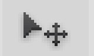
Lets you move any item on canvas.
Eraser Tool (E)
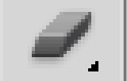
Lets you erase on canvas.
Shape Tool (U)
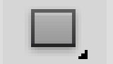
Will allow you to create shape.
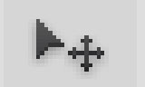
Lets you move any item on canvas.
Eraser Tool (E)
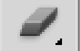
Lets you erase on canvas.
Shape Tool (U)
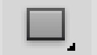
Will allow you to create shape.
Magic Wand (W)
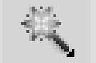
When clicked on will also select area around it.
Paint Can and Gradient Tools (G)
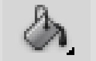
Lets you paint large area with foreground color.
Hand Tool (U)
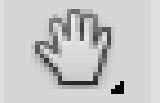
Lets you click and drag items on canvas.
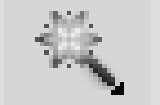
When clicked on will also select area around it.
Paint Can and Gradient Tools (G)
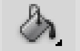
Lets you paint large area with foreground color.
Hand Tool (U)
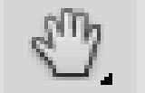
Lets you click and drag items on canvas.
Paintbrush and Pencil (B)
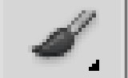
Interchangable painbrush or pen the emulates such item.
Type Tool (T)
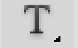
Will create new type area or edit selected.
Zoom Tool (Z)
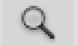
Lets you zoom in or out on area clicked on.
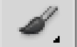
Interchangable painbrush or pen the emulates such item.
Type Tool (T)
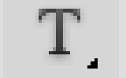
Will create new type area or edit selected.
Zoom Tool (Z)
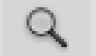
Lets you zoom in or out on area clicked on.